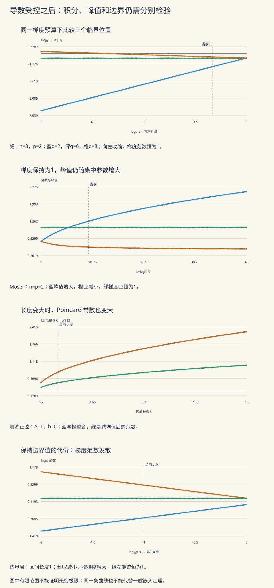

本页目录
现代 PDE II · Sobolev 空间
控制一个函数的导数，需要付出多少积分预算？这份预算能约束函数的总量、最高峰，还是边界值？Sobolev 空间把这些问题放在同一个框架中，但每一种结论都有自己的条件。前置：分布与弱导数、Hölder 不等式和 \(L^p\) 完备性；后续：二阶椭圆方程。
学习层：同一份导数预算，四种不同的检验
先回答四个预测，再打开图与账本。可以先完成帽函数一组，读到临界情况后再切换 Moser 集中；区间上的两个模型用于核对边界条件。
| 模型 | 改变什么 | 要分清的两件事 |
|---|---|---|
| 固定梯度的帽函数 | 支撑半径与目标幂次 | 积分范数受控，是否就意味着峰值受控 |
| 临界 Moser 族 | 对数集中参数 | 每个函数有界，是否意味着整族有统一上界 |
| 正弦加常数 | 区间长度、偏置与振幅 | 零边界值与减去均值是否相同 |
| 窄边界层 | 层宽与区间长度 | 内部积分很小，是否意味着边界值很小 |
无脚本参考账本
帽函数取 n=3、p=2、q=p*=6、ε=0.1；Moser 例取 n=2、L=10；正弦例取区间长度1、振幅1、偏置0；边界层宽0.1、区间长度1。下表均来自正文解析公式。
| 量 | 解析公式的数值 |
|---|---|
| 帽：梯度L2 | 1 |
| 帽：峰值 | 1.54509681 |
| 帽：临界L6 | 0.296431203 |
| 帽：支撑体积 | 0.0041887902 |
| Moser：梯度L2 | 1 |
| Moser：峰值 | 1.26156626 |
| Moser：L2 | 0.15811388 |
| Moser：指数临界系数4π | 12.5663706 |
| 正弦：L2 | 0.707106781 |
| 正弦：梯度L2 | 2.22144147 |
| 正弦：最优常数1/π | 0.318309886 |
| 边界层：L2 | 0.182574186 |
| 边界层：梯度L2 | 3.16227766 |
| 边界层：左端迹 | 1 |
帽的临界范数不随半径改变。Moser 族的峰值随 L 增大而没有统一上界。正弦达到区间零迹最优常数；边界层则展示单独 L² 控制的不足。

1 · 为什么把弱导数放进范数
在开集 \(\Omega\subset\mathbb R^n\) 上，对整数 \(k\ge0\)、\(1\le p\le\infty\)，定义
这里的导数是分布意义下、由 \(L^p\) 函数表示的弱导数。它们几乎处处唯一；函数也按几乎处处相等分类。对有限 \(p\)，采用
对 \(p=\infty\) 可取各阶导数本质上确界的最大值。讨论一阶几何估计时，下文的 \(|\nabla u|\) 使用欧氏长度；这给出的范数与上述逐分量定义等价，但讨论最优常数时必须固定约定。
完备性是弱导数定义的直接回报。 若 \((u_j)\) 在上述范数中 Cauchy，\(L^p\) 的完备性给出 \(D^\alpha u_j\to v_\alpha\) 于 \(L^p\)，其中 \(v_0=u\)。对每个 \(\varphi\in C_c^\infty(\Omega)\)，
Hölder 不等式控制两端的极限误差；\(p=\infty\) 时配对的测试函数属于 \(L^1\)。因此同一等式对 \(u,v_\alpha\) 成立，\(D^\alpha u=v_\alpha\)，且 \(u_j\to u\) 于 Sobolev 范数。这证明 \(W^{k,p}\) 是 Banach 空间。\(H^k=W^{k,2}\) 的内积为各阶弱导数 \(L^2\) 内积之和，所以它是 Hilbert 空间。
对 \(1\le p<\infty\)，Meyers–Serrin 定理允许用 \(C^\infty(\Omega)\cap W^{k,p}(\Omega)\) 强逼近任意 Sobolev 函数。证明需要在内部局部磨光，再用局部有限的单位分解拼接，并把各片误差安排成可求和数列。它没有要求逼近函数在边界附近为零。另一个空间
额外包含边界限制。不要把这两个稠密性陈述混为一谈，也不要把有限 \(p\) 的强磨光结论直接移到 \(p=\infty\)：例如 \(|x|\) 的弱导数是阶跃式的符号函数，连续导数不可能在本质上确界范数下把这个跳跃逼近到任意小。
2 · 先算缩放，再问不等式能否成立
固定一个非零的 \(\phi\in C_c^\infty(\mathbb R^n)\)，令
导数产生 \(1/\varepsilon\)，积分换元 \(x=\varepsilon y\) 产生 \(\varepsilon^n\)。所以
固定梯度预算必须取 \(a=n/p-1\)。 此时目标范数的指数变成
当 \(1\le p<n\)，恰有一个有限指数使它等于零：
这只是必要的尺度条件。它说明一个全空间、只含梯度、常数与尺度无关的不等式应该使用哪个指数；它还没有证明那个不等式。
实验用可逐项积分的帽函数，把系数也保留下来。记 \(\omega_n=|B_1|=\pi^{n/2}/\Gamma(1+n/2)\)，并取
它是全空间的紧支集 Lipschitz 函数。球内除原点外，梯度的长度是 \(A_\varepsilon/\varepsilon\)；球面上函数连续，所以弱一阶导数没有额外的面质量。于是
径向积分给出
整数维度下，可由 Beta 积分递推或反复分部积分得到
因此无需相减两个很大的 Gamma 对数。默认三维例的 \(B(3,7)=1/252\)。当半径趋零时，\(q<p^*\) 的范数趋零，\(q=p^*\) 的范数保持为正，\(q>p^*\) 的范数发散；与此同时峰值一直增大。
实验的帽形图使用 \(x/\varepsilon\) 与 \(u/A_\varepsilon\)，以免在固定像素网格上漏掉极窄支撑。实际半径、体积、峰值另列。符号选项“q=p*”保留严格临界关系；手动 q 按输入的机器数值判定，不用任意容差把微小指数抹成零。近临界两条曲线在有限图上几乎重合，仍可能有不同的极限。
3 · 补上真正的 Sobolev 不等式证明
Gagliardo–Nirenberg–Sobolev 不等式：对 \(n\ge2\)、\(1\le p<n\) 和 \(u\in C_c^\infty(\mathbb R^n)\)，
下面证明常数存在，不计算最优常数。首先对 \(p=1\)，沿第 \(i\) 个方向积分：
符号 \(\widehat x_i\) 表示去掉第 \(i\) 个坐标。把 \(n\) 个估计相乘并开 \(1/(n-1)\) 次方后，需要下面的乘积积分引理：
引理的归纳步骤。 \(n=2\) 时左右两边相等，是 Fubini。对 \(n>2\)，先对 \(x_n\) 用 \(n-1\) 个同指数的 Hölder，令 \(G_i=\int F_i\,dx_n\)（\(i<n\)），得到被积式 \(F_n^{1/(n-1)}\prod_{i<n}G_i^{1/(n-1)}\)。再对其余 \(n-1\) 个变量使用 Hölder，指数为 \(n-1\) 与 \((n-1)/(n-2)\)：
对最后的积分用 \(n-1\) 维归纳假设，再用 Fubini 得 \(\int G_i=\int F_i\)，即完成证明。非负函数可先截断再用单调收敛处理无限积分。
把引理代回，开 \((n-1)/n\) 次方，得到
最后一步使用逐点 \(|\partial_i u|\le|\nabla u|\)。这些估计同样适用于紧支集 \(C^1\) 函数。
现在取 \(1<p<n\)，令
将刚才的 \(p=1\) 结果用于 \(|u|^\gamma\)。它是 \(C^1\) 紧支集函数，链式法则仍成立；无需假称非整数幂在零点也光滑到任意阶。Hölder 给出
两处指数恰好相同：
若 \(u\ne0\)，约去正的 \(\|u\|_{p^*}^{\gamma-1}\)；\(u=0\) 时显然成立。于是得到所需不等式。通过紧支集光滑逼近可延拓到 \(W^{1,p}(\mathbb R^n)\)；相应齐次空间也可用这个估计构造。一般有界域中允许非零常数，因而未经边界归一化不能把右侧只写成梯度。
上述乘积积分方法、嵌入与迹的标准版本可对照 Hunter《PDE》§3.5–3.12。这里把缩放的必要性和分析估计的充分性分开完成。
4 · 临界维度：帽函数没发散，不代表所有函数都受控
在 \(p=n\ge2\) 时，固定梯度的普通帽函数高度不随半径变化。它因此无法检验是否存在统一 \(L^\infty\) 上界。换成把变化分布到许多对数壳层的函数。
记 \(S_{n-1}=n\omega_n\) 为单位球面面积，在单位球上定义 \(L>0\)：
边界值为零，球外延拓为零。对每个固定 \(L\)，这是 Lipschitz 函数，属于 \(W_0^{1,n}(B_1)\)。函数在平台边缘连续；弱一阶导数由分段普通导数给出。直接积分：
令 \(t=\log(1/r)\)，函数自身的积分为
第二式来自一次分部积分消去平台项，再递推。特别地 \(\|u_L\|_n^n\le n!/(n^{n+1}L)\)，所以整族 \(W^{1,n}\) 范数有界而峰值没有统一上界。这才否定一般的 \(W^{1,n}\to L^\infty\) 连续嵌入。
临界点仍有更细的控制。 对有界光滑域 \(\Omega\)、\(n\ge2\)、\(u\in W_0^{1,n}(\Omega)\)，若 \(\|\nabla u\|_n\le1\)，Moser–Trudinger 定理给出
这是另一个定理，本页引用其上界而不以一条实验曲线充当证明。其规范化和最优系数见 Chang–Yang 的综述 §1。二维时 \(\alpha_2=4\pi\)。
本页可以独立核对系数为什么不能更大：只积分 Moser 族的平台，就有
当 \(\alpha>\alpha_n\)，右侧发散。这证明更大系数不可能有统一上界；它不证明临界系数处对所有函数的上界。
一维必须单独说。 在有限区间 \((0,\ell)\) 上，\(W^{1,1}\) 函数有绝对连续代表，
最后的估计可先对 \(y\) 积分平均。因此一维临界 \(p=n=1\) 确实有连续代表和 \(L^\infty\) 控制；不要把高维集中反例套过来。
5 · 超临界连续性，与低于临界的紧性
对 \(n<p<\infty\)，Morrey 估计的指数为 \(\alpha=1-n/p\)。它作用于合适的连续代表，而不是任意修改过零测集后的逐点值。理解指数的一种方法，是把光滑函数的点值与球平均相减，沿径向积分后得到
Hölder 中的核积分是
它在原点收敛恰需 \(p>n\)，开 \(1/p'\) 次方后带来 \(r^{1-n/p}\)。取包含两点的可比大小球并比较平均值，就得到局部 Hölder 控制；用磨光极限选出连续代表。球平均比较的完整证明与域的延拓属于 Morrey 定理，不由这一个幂次检查单独完成。
下表统一取有界 Lipschitz 域，控制量是完整 \(W^{1,p}\) 范数，且 \(p<\infty\)。符号 \(C^{0,0}\) 在表中只表示连续函数的一致范数。
| 参数 | 连续嵌入 | 可抽出强收敛子列的范围 |
|---|---|---|
| \(1\le p<n\) | \(L^q\)，\(1\le q\le p^*\) | \(L^q\)，\(1\le q<p^*\) |
| \(p=n\ge2\) | 每个有限 \(L^q\)，\(1\le q<\infty\) | 每个有限 \(L^q\) |
| \(n<p<\infty\) | \(C^{0,\alpha}\)，\(\alpha=1-n/p\) | \(C^{0,\beta}\)，\(0\le\beta<\alpha\) |
| \(n=p=1\)，有限区间 | 绝对连续代表，且有 \(L^\infty\) 控制 | 每个有限 \(L^q\)；一般不紧嵌入一致范数 |
Rellich–Kondrachov 的结论是“每个有界序列存在子列”，不是原序列必然收敛。其一个证明路线是在有界延拓区域上使用平移估计 \(\|u(\cdot+h)-u\|_p\le |h|\|\nabla u\|_p\)，用有限网格上的局部平均构造有限维近似，再通过插值提升到低于临界的 \(L^q\)。这是需要紧性判据的定理；这里给出路线而不省略为“闭球自动紧”。
为什么 \(q=p^*\) 要排除？把第2节的帽函数放在域内部，令 \(\varepsilon\to0\)，它在原点外逐点趋零，\(W^{1,p}\) 有界，\(L^{p^*}\) 范数却保持正值。若有强收敛子列，其极限只能几乎处处为零，与范数不变矛盾。在全空间上，固定鼓包不停平移还会逃向无穷远，所以仅有低于临界指数也不足以保证全空间紧性。
一维 \(W^{1,1}\) 的一致紧性同样会失败：高度1、宽度趋零的三角帽，其导数 \(L^1\) 范数始终为2。它们不能一致收敛到零，尽管每个函数都连续。
6 · 零迹与减均值：导数看不到的那部分
常数 \(b\) 的梯度为零。要从梯度控制整个函数，就必须消除这份自由度。零迹与零均值是两种常见条件，但它们不是同一个条件。
实验在 \((0,\ell)\) 上使用
正交积分给出
第二种写法是两个非负项之和，计算时避免大项相减。设 \(C=\ell/\pi\)，则
\(b=0\) 时差为零，正弦达到零迹 Poincaré 不等式的最优常数。\(b\ne0\) 时，某些参数仍可能碰巧使差非正；那不能取消定理的边界条件。取 \(A=0,b=1\) 就立即违反任何只含梯度的上界。此时范数比的分母为零，实验明确标成未定义，而不是显示一个伪造的有限数值。
区间最优常数的证明。 对 \(u\in H_0^1(0,\ell)\)，展开正弦级数；Parseval 与弱导数的傅里叶恒等式给出
逐项用 \(k^2\ge1\)，得到 \(\|u\|_2\le(\ell/\pi)\|u'\|_2\)。取第一正弦模态就取等，因此常数最优。可以先对光滑零迹函数证明导数恒等式，再由 \(H_0^1\) 稠密性通过极限。
若约束改成 \(\int_0^\ell u=0\)，用余弦展开，常数模态消失，同样得到最优常数 \(\ell/\pi\)；这次取等函数是 \(\cos(\pi x/\ell)\)。实验中的“正弦减均值”满足均值条件，但通常不取等，也通常不满足零迹。
域的条件要精确。 零迹 Poincaré 在有界开集上可由零延拓到包含它的长方体证明，无需假设连通。对紧支集光滑函数从长方体一侧积分，再用 Hölder 与 Fubini：
其中 \(d\) 是该方向的边长。这是有效但通常非最优的常数，有限 \(p\) 的零迹闭包使估计延续。零均值版本则需如有界连通 Lipschitz 域这样的条件；两个不连通分支上取不同常数、让总均值为零，仍可留下零梯度的非零函数。
“无界域一定失败”也不对。固定宽度 \(d\) 的无限条带，对零迹函数沿横向照样有 Poincaré 控制。相反，在 \(\mathbb R^n\) 上令 \(u_R(x)=\phi(x/R)\)，则
这证明全空间不可能有统一常数；关键是允许函数在所有方向拉伸而没有边界约束，不能仅凭“无界”二字断言。
7 · 迹从哪里来，为什么单独积分不够
对有限区间上的 Sobolev 绝对连续代表，先用微积分基本定理，再对另一端点位置平均，得到
这解释了边界值为什么由 Sobolev 范数 连续控制。在有界 Lipschitz 域、\(k=1\)、\(1\le p<\infty\) 的标准迹定理中，存在有界线性算子
它延拓光滑函数的边界限制，由边界图上的一维估计、局部拼接和连续延拓构造。边界的体积测度为零，不能把 \(L^p(\Omega)\) 等价类任意补上的边界值当成迹。上述目标 \(L^p(\partial\Omega)\) 是方便使用的版本，不声称算子的像恰好是全部边界 \(L^p\)。
实验给出一个直接反例。对 \(0<\varepsilon\le\ell\)，
它在 \(L^2\) 趋零，左端迹却不变；没有违反迹定理，因为它没有在 \(H^1\) 趋零，甚至 \(H^1\) 范数都不有界。
更高阶的零迹不能只看 \(u\)。例如区间上 \(u(x)=x(\ell-x)\) 的函数值在两端为零，但 \(u'(0)=\ell\)、\(u'(\ell)=-\ell\)。它属于 \(W^{2,p}\)，却不属于有限 \(p\) 的 \(W_0^{2,p}\)：若能由紧支集光滑函数在 \(W^{2,p}\) 中逼近，其一阶导数就在 \(W^{1,p}\) 中逼近，连续的端点迹会迫使两个导数迹也为零，矛盾。
8 · 四道迁移练习
练习1：换一个光滑鼓包，临界指数会改变吗？
取固定非零 \(\phi\in C_c^\infty(B_1)\)、\(n\ge2\)、\(1\le p<n\)，令 \(u_\varepsilon=\varepsilon^{-a}\phi(x/\varepsilon)\)。确定固定梯度的 \(a\)；在域内缩放时，哪些目标范数发散？这是否证明了一般嵌入？
展开完整答案：把导数和体积分别记账
梯度是 \(\varepsilon^{-a-1}(\nabla\phi)(x/\varepsilon)\)。其 \(p\) 次积分为 \(\varepsilon^{n-p(a+1)}\|\nabla\phi\|_p^p\)，所以范数指数是 \(n/p-a-1\)，取 \(a=n/p-1\)。目标 \(L^q\) 范数的指数为 \(n/q-a=1-n/p+n/q\)。于是低于、等于、高于 \(p^*\) 分别趋零、保持正值、发散。
常数系数取决于 \(\phi\)，幂指数不变。若把支撑放在域内一点并仅作足够小的缩放，边界不截断鼓包；若在边界附近随意缩放，则要另查支撑与边界条件。这个族排除过强的统一估计，也显示临界紧性失败；它没有证明所有函数满足临界上界。充分性来自第3节的分析估计。
练习2：一个点奇性何时属于 Sobolev 空间？
在 \(B_1\subset\mathbb R^n\) 上取 \(u(x)=|x|^{-a}\)，\(a>0\)、\(1\le p<n\)。不仅判断积分，还要证明候选导数确实是弱导数。检查 \(n=3,p=2,a=1/3\)。
展开完整答案：可积性与原点边界项
极坐标下，函数的 \(p\) 次积分在零点附近与 \(\int_0^1r^{n-1-ap}\,dr\) 相同类型，有限恰需 \(a<n/p\)。候选梯度为 \(-a|x|^{-a-2}x\)，其 \(p\) 次积分要求 \(a<n/p-1\)，后者更强，等号处有对数发散。
充分性还需检查原点没有额外分布项。在挖去 \(B_\eta\) 的区域分部积分，内球面项的绝对值至多为 \(C_\varphi\eta^{n-1-a}\)。上述范围保证 \(a<n/p-1\le n-1\)，故它趋零；函数与候选导数的局部可积性允许恢复小球体积分。因此候选导数是弱导数。
反之，若 \(u\in W^{1,p}\)，在避开原点的开集上弱导数必须等于普通导数，由几乎处处唯一性迫使上述积分有限。所以 \(u\in W^{1,p}(B_1)\) 恰当且仅当 \(a<n/p-1\)。三维 \(a=1/3<1/2\)，故它属于 \(H^1\)，但本质上无界。没有违反 \(H^1\hookrightarrow L^6\)：\(6a=2<3\)，它的六次积分仍有限。
练习3：临界集中究竟否定了什么？
说明 Moser 族为何同时具有有界 Sobolev 范数和无统一峰值上界；只用平台部分证明 \(\alpha>\alpha_n\) 时指数积分不能统一受控。为什么一维不能照搬？
展开完整答案：族的极限与定理的逻辑方向
梯度的 \(n\) 次积分是 \(L^{-1}\int_{e^{-L}}^1dr/r=1\)。第4节公式给出 \(\|u_L\|_n^n\le n!/(n^{n+1}L)\)。因此在 \(L\ge1\) 上 \(W^{1,n}\) 范数统一有界。峰值却是 \(S_{n-1}^{-1/n}L^{1-1/n}\)，当 \(n\ge2\) 时发散。这否定统一 \(L^\infty\) 估计；每个固定 \(L\) 的函数仍然有界。
平台体积为 \(\omega_ne^{-nL}\)，平台上 \(|u_L|^{n/(n-1)}=S_{n-1}^{-1/(n-1)}L\)。两者相乘给出第4节的指数下界。系数 \(\alpha>\alpha_n\) 时增长指数为正，故积分发散；在等号处这个下界只是常数，无法由此推得所有函数的统一上界。
若 \(n=1\)，峰值的 \(L\) 指数变成0，这个集中机制失去发散能力；更根本地，有限区间上的绝对连续表示直接给出 \(\|u\|_\infty\le\ell^{-1}\|u\|_1+\|u'\|_1\)。一维需要保留这一独立结论。
练习4：把边界条件换掉，会发生什么？
取 \(u=b+A\sin(\pi x/\ell)\)。说明 \(b=0\)、\(b=-2A/\pi\)、\(A=0,b=1\) 各满足什么；再解释边界层为何不违反迹连续性。最后比较全空间与固定宽度无限条带。
展开完整答案：每个条件挡住哪种自由度
\(b=0\) 时是零迹正弦，非零 \(A\) 达到 \(\|u\|_2/\|u'\|_2=\ell/\pi\)。\(b=-2A/\pi\) 时均值为零，非零 \(A\) 的两个端点值都非零，因此不属于零迹情形，但满足减均值的 Poincaré 估计。\(A=0,b=1\) 时梯度为零而函数范数为 \(\sqrt\ell\)，直接反驳对任意函数只用梯度控制的主张；不应对零梯度执行除法。
边界层满足 \(\|v_\varepsilon\|_2=\sqrt{\varepsilon/3}\)，左端迹为1，但 \(\|v_\varepsilon'\|_2=\varepsilon^{-1/2}\)。迹定理的右侧含导数，它没有趋零，所以没有矛盾。
全空间的膨胀鼓包使函数范数与梯度范数之比随 \(R\) 增长，阻止统一 Poincaré 常数。固定宽度条带有横向零迹条件，沿横向从边界积分得到宽度所控制的估计；沿纵向再积分并不改变常数。因此不能把全空间反例推广为“所有无界域失败”。
9 · 实验如何复算，下一页会用到什么
每条参数曲线使用201个基础节点，并加入当前参数；折点单独保留。帽函数的 Beta 系数使用有限乘积。Moser 族的整体积分使用有限和，另按 \(t=\log(1/r)\) 分成200个壳层核对。对壳层 \([a,a+h]\)，
后一式可展开 \(e^{n(h-v)}\) 再逐项积分得到。它全为正项，避免两个接近的不完全 Gamma 值相减。实验限 \(2\le n\le6\)、\(1\le L\le40\)，壳宽至多0.2；级数按相对项阈值终止并检查迭代上限。账本保留各壳层、二项式项、矩值、项数与总和差。这是可复算的数值诊断，不是浮点误差的严格上界。
帽函数实验另限 \(1\le p\le n-0.1\)、\(10^{-6}\le\varepsilon\le1\)，手动 \(1\le q\le1000\)。这些是界面范围；数学结论的极限与适用域在正文单独给出。区间长度范围0.2–10，正弦振幅与偏置范围−2–2，边界层相对宽度0.01–1。
下一页的弱椭圆方程会把 \(\int\nabla u\cdot\nabla v\) 作为能量配对。选择 \(H_0^1\) 并使用 Poincaré，才能让这份导数能量控制完整范数；紧嵌入则帮助极小化序列保留一个极限。进一步可读 热核正则化与随机分布，看频率壳层怎样重新表达同一类正则性预算。